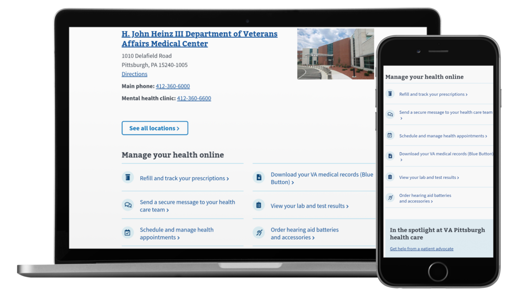

How we use content strategy and design to deliver consistent information to Veterans at scale

At DrupalGovCon 2020, CivicActions Product Manager Kevin Walsh and co-presenter Jane Newman discussed content design and strategy for a pilot VA health center that would serve as a model for all future VA.gov content. The Veterans Health Administration (VHA) represents the largest hospital system in the U.S. and provides healthcare to 14 million veterans across its 1200 facilities, including 150 hospitals and over 1000 community clinics.
Our team joined the massive effort to modernize the VA experience for Veterans, beginning with the pilot site for Pittsburgh VA healthcare facility. We interviewed VHA patients and facility web editors to inform the design for Pittsburgh’s VA website, then used those metrics to scale and consolidate the new features across the remaining 150+ VA facilities.
Thanks to smart content design, Veterans can more easily access health services and manage things like prescription refills online.
The project made it easier for Veterans to access health services and manage things like prescription refills online. We also put a lot of focus on getting the VA content managers set up for success.
“You need to worry about your editor experience as well as your user experience; if the editors don’t have a good experience, the end users don’t either.”
-Kevin Walsh
Highlights
- 2:28 — History of the Dept. of Veterans Affairs (VA)
- 4:05 — Launch and impact of the Pittsburgh health center’s pilot website
- 6:27 — Designing with veterans, not just for them
- 7:20 — Working with web editors to create informed designs
- 9:52–4 Veteran-centric content strategy principles
- 11:50 — Origin of the phrase “If you’ve seen one VA, you’ve seen one VA”
- 14:08 — Content audit results and top critical issues
- 16:15 — Audience guesses percentage of disparities between VA websites
- 26:19 — Developing a single source of truth for consistent content
- 31:00 — Why content taxonomy should be portable, rather than pretty
- 35:25 — Using Drupal for content proofing purposes
Resources
- Presentation Slide Deck
- VA Pittsburgh health care pilot
- GitHub Repo
- VA.gov CMS content model
- Universal Health Care content model
Connect with Kevin